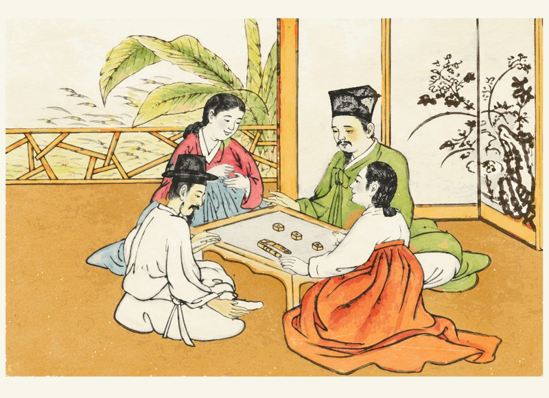
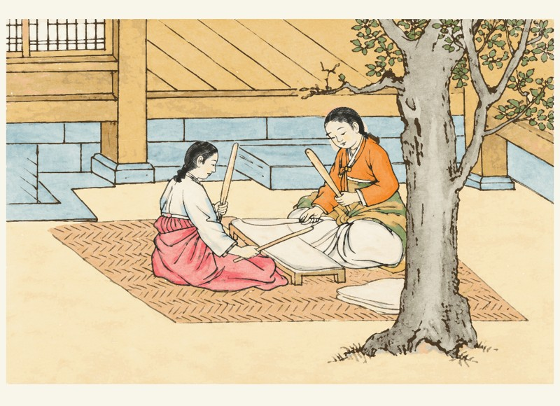
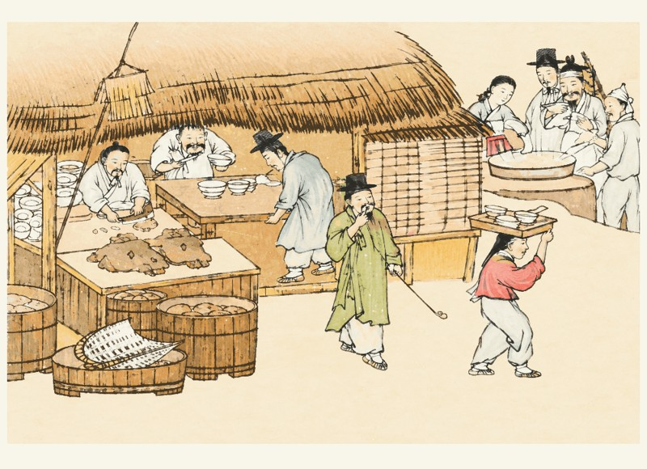
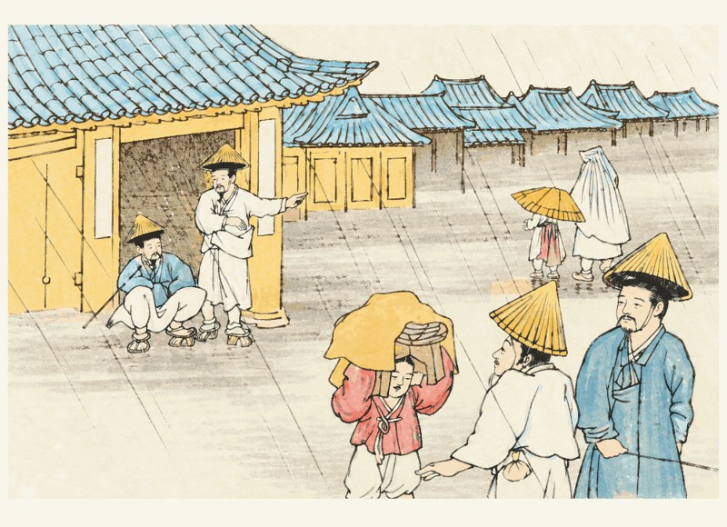
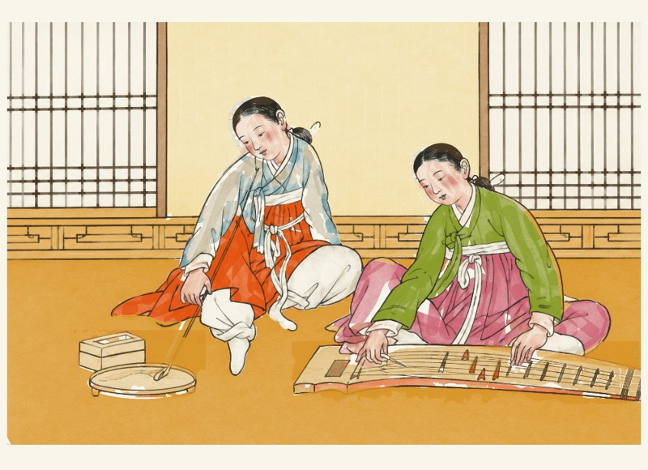
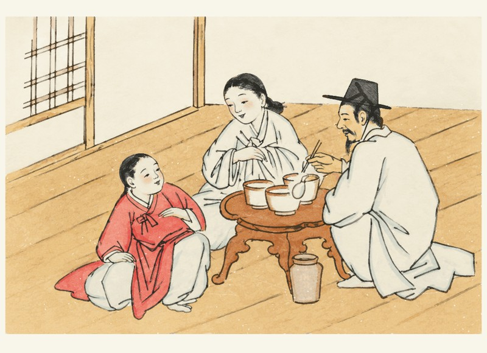
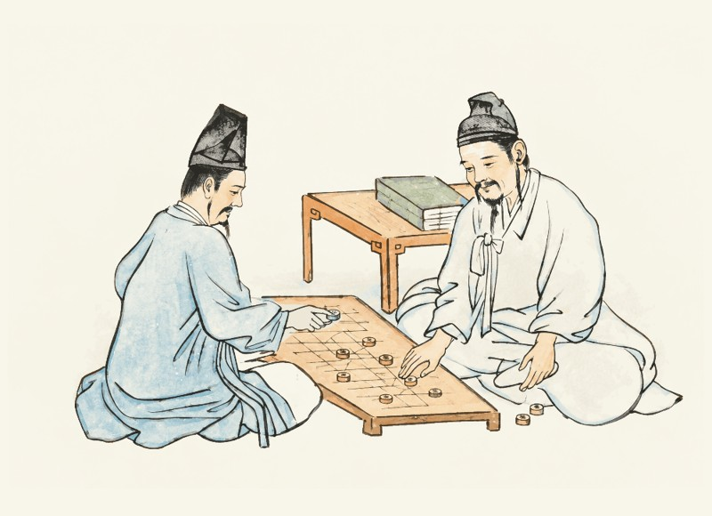
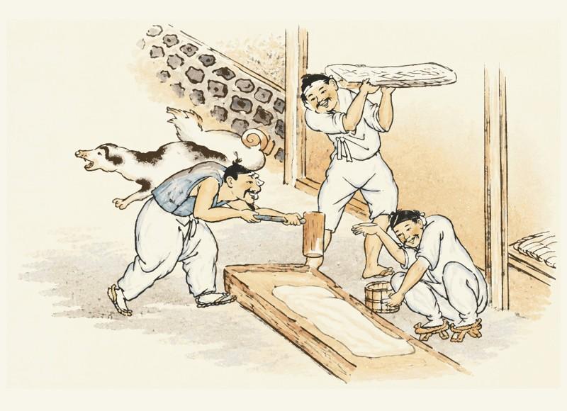
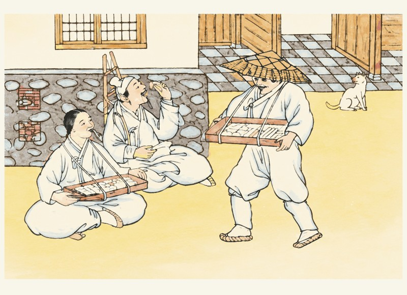
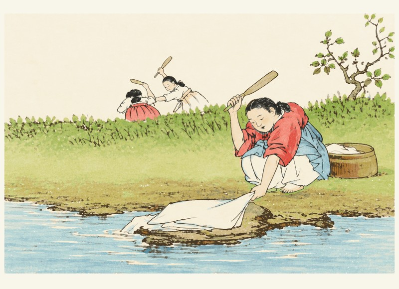

머리부터, 한 사람씩
머리·얼굴 채색 → 몸 채색 → 세선 정리 → 다음 사람 → 물건 → 색별 배경
그림을 누르면 새 검토 플레이어가 열립니다. 인물별 머리·몸과 배경 색별 바로가기를 이용할 수 있습니다.

01 · EP02네 사람이 둘러앉은 이유
그리는 과정 열기 ↗

02 · EP03옷을 두드리던 시간
그리는 과정 열기 ↗

03 · EP04길 위의 밥 한 끼
그리는 과정 열기 ↗

04 · EP05비 오는 날의 조선
그리는 과정 열기 ↗

05 · EP06손끝에서 흐르는 노래
그리는 과정 열기 ↗

06 · EP07낮은 상에 모인 사람들
그리는 과정 열기 ↗

07 · EP08말 한 수에 담긴 하루
그리는 과정 열기 ↗

08 · EP09두 사람이 맞추는 박자
그리는 과정 열기 ↗

09 · EP10골목에 온 단맛
그리는 과정 열기 ↗

10 · EP11물가에 모인 하루
그리는 과정 열기 ↗